A Firelit Lecture on the Fourth Dimension
The evening unfolded in the peculiar warmth of the Time Traveller's drawing room, where firelight danced against silver fixtures and champagne bubbles rose through crystal glasses like tiny planets ascending through space. We reclined in those remarkable patent chairs of his invention—chairs that seemed almost sentient in their comfort—while our host, his grey eyes glittering with barely contained excitement, prepared to overturn everything we thought we understood about the nature of existence itself.
He began, as he so often did, with what appeared to be simple geometry, though nothing about his conclusions would prove simple at all. The mathematical abstractions we had all accepted without question in our schooldays—lines without thickness, planes without depth—these, he argued, were merely the beginning of a far grander deception. For if a cube required length, breadth, and thickness to exist, must it not also require *duration*? An instantaneous cube, he insisted, was no cube at all. Time, therefore, was nothing less than the Fourth Dimension.
Filby, predictably, resisted with all the stubborn vigour one expects from argumentative men with red hair. The Provincial Mayor struggled valiantly to follow, his lips moving silently as though repeating an incantation. The Medical Man posed sensible objections about why we cannot move freely through Time as we move through Space, to which our host countered with observations about gravitation's constraints upon vertical movement—before balloons, after all, mankind was similarly imprisoned.
But here lay the germ of his great discovery: that we are not so fixed in Time as we imagine. Memory itself, he suggested, represents a kind of temporal travel—those vivid moments when recollection transports us backward, leaving us absent-minded in the present. If civilisation had conquered gravity with balloons, why should it not eventually master the drift along the Time-Dimension? Why should a man not accelerate, decelerate, or even reverse his passage through Time altogether?
The company entertained itself with fanciful speculations—historians verifying the Battle of Hastings, scholars learning Greek from Homer's own lips, investors depositing fortunes to collect in some distant future. I myself ventured that such a traveller might discover society rebuilt upon strictly communistic principles, though the notion seemed as fantastical as any other that evening.
When Filby dismissed the entire theory as contrary to reason, the Time Traveller's response carried a weight we had not anticipated. He spoke of a machine—one that might travel indifferently through any direction of Space and Time. More remarkably still, he claimed experimental verification.
The room fell into sceptical silence. The Psychologist demanded to see this experiment, declaring it humbug even as curiosity betrayed him. And so, with that faint smile playing about his lips and his hands thrust deep into his pockets, the Time Traveller shuffled off toward his laboratory, leaving us to wonder whether we sat in the company of a madman, a charlatan, or something far more extraordinary.
We had not long to speculate before we heard his returning footsteps, and Filby's half-told anecdote about a conjuror dissolved into irrelevance against what our host was about to reveal.
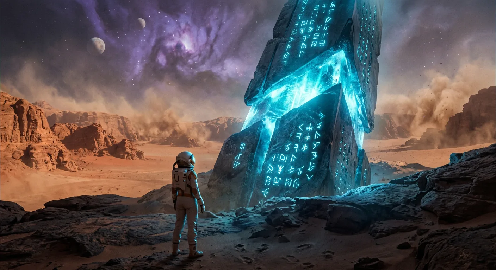
A Glittering Model Vanishes Into Time
The Time Traveller produced his evidence that evening—a delicate contraption of glittering metal, ivory, and crystalline substance, scarcely larger than a small clock, yet wrought with extraordinary precision. He set it upon one of the octagonal tables before the fire, positioning the thing beneath the bright glow of a shaded lamp while candles illuminated the room from mantel and sconces alike. The assembled company drew close: the narrator in a low armchair nearest the flames, Filby peering over the inventor's shoulder, the Medical Man and Provincial Mayor observing from the right, the Psychologist stationed at the left, and the Very Young Man hovering behind. All were watchful, alert to any possibility of deception, yet the conditions seemed to preclude trickery of any conceivable sort.
The Time Traveller explained his model with the calm authority of a man who has laboured two years upon a single purpose. He drew attention to the curious askew quality of the device, the odd twinkling unreality of one particular bar, and demonstrated the function of two small levers—one to send the machine gliding into the future, the other to reverse its motion. Then, with deliberate showmanship, he invited the Psychologist to participate directly, guiding that gentleman's finger to the lever so that no accusation of sleight-of-hand might follow.
What happened next defied all rational expectation. The lever turned. A breath of wind stirred the room, the lamp flame leapt, and a candle guttered out upon the mantel. The little machine swung round, grew indistinct, flickered like a ghost of brass and ivory—and vanished utterly, leaving the table bare save for the lamp itself.
Silence held the company for a long moment before Filby broke it with a profanity. The Psychologist, recovering himself, peered beneath the table as though suspecting some hidden compartment, while the Time Traveller laughed and calmly filled his pipe. The Medical Man demanded earnest confirmation; the Time Traveller gave it without hesitation, adding that a full-sized machine stood nearly complete in his laboratory, ready for his own voyage through the ages.
A debate ensued regarding the model's destination—future or past. The Psychologist reasoned it must have travelled backward, since an object moving into the future would remain present throughout intervening time. The narrator countered that a machine arriving from the future ought to have been visible on previous visits. The Time Traveller dismissed these objections with talk of threshold perception, and the Psychologist, grasping the concept, explained that an object moving through time at tremendous speed would create only the faintest impression upon observers—much as a spinning wheel spoke or a flying bullet escapes the eye.
The Medical Man counselled patience, suggesting that morning's common sense might dispel the evening's plausibility. Yet when the Time Traveller offered to show them the actual machine, curiosity proved irresistible. He led them down the long draughty corridor, lamp held aloft, his broad head casting strange shadows upon the walls. In the laboratory stood the larger apparatus—nickel and ivory and rock crystal, substantially complete though certain twisted bars remained unfinished upon the workbench. The Medical Man, recalling some Christmas ghost illusion, pressed once more for assurance of sincerity. The Time Traveller, holding the lamp high above the machine, declared he had never been more serious in his life.
None of the company quite knew how to receive such a pronouncement, and as the narrator caught Filby's eye across the room, that gentleman offered only a solemn, knowing wink—the gesture of men standing at the threshold of something they could neither credit nor dismiss.
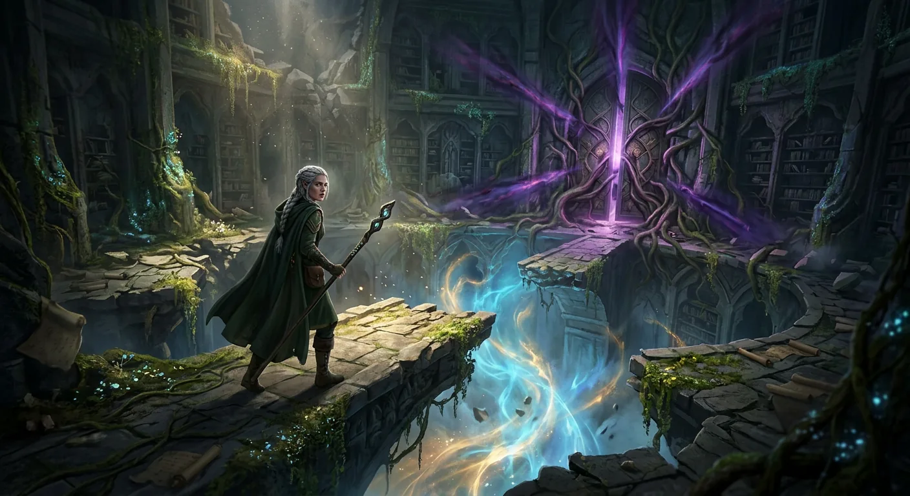
A Haggard Return From Beyond
None of us truly believed him, not really—and perhaps that was the trouble with a man like the Time Traveller. He possessed that peculiar curse of being too clever by half, the sort of fellow whose very brilliance invited suspicion rather than confidence. One always sensed hidden chambers behind his apparent candour, some concealed machinery of wit turning just out of sight. Had simple Filby presented the same demonstration, we should have accepted it readily enough, for a pork-butcher's motives are transparent things. But the Time Traveller carried whimsy in his blood, and what might have secured another man's reputation seemed mere conjuring in his capable hands. It is, after all, a grave error to accomplish difficult things too easily.
So the week passed with little spoken of time travel between us, though I suspect its strange possibilities haunted each man's private thoughts—the plausibility of it warring with its utter practical impossibility, the delicious confusion of anachronism it promised. I confess I remained preoccupied with the mechanical trick of the vanishing model, discussing it with the Medical Man at the Linnæan on Friday. He mentioned having witnessed something similar at Tübingen, emphasising the business with the candle, though he could not explain how the deception was managed.
The following Thursday found me returning to Richmond, arriving late to discover four or five gentlemen already gathered in the drawing-room—and no sign of our host. The Medical Man stood before the fire consulting his watch, a note in hand explaining that the Time Traveller had been unavoidably detained and requesting we begin dinner at seven without him. The Editor suggested we ought not let the meal spoil, and so we proceeded.
Our company included the Psychologist from the previous gathering, the Editor, a journalist of the joyous irreverent sort, and a quiet bearded man who never uttered a word throughout the evening. Speculation arose naturally regarding our host's absence, and I suggested time travelling in half-jocular spirit. The Psychologist was midway through his wooden account of the previous week's demonstration when the corridor door opened slowly, silently.
I faced the entrance and saw him first. "At last!" I called out—then cried in genuine alarm at the sight of him.
He stood in the doorway in the most extraordinary condition: coat filthy and smeared with green down the sleeves, hair wild and seemingly greyer than before, face ghastly pale beneath the grime. A half-healed cut marked his chin. His expression bore the haggard stamp of profound suffering, and he moved with the painful limp of a footsore vagrant. We sat in stunned silence as he approached the table, wordlessly motioning for wine. He drained the champagne at once, then another glass, and gradually a ghost of his familiar smile returned.
He would explain everything, he promised, after washing and dressing—if only we might save him some mutton, for he was starving for meat. As he limped toward the stairs, I noticed his feet were bare save for tattered, blood-stained socks.
The dinner resumed uneasily, the new guests frankly incredulous at my account of the time machine. The Editor and Journalist heaped cheerful ridicule upon the notion—hadn't they clothes-brushes in the Future, then? But when the Time Traveller returned in evening dress, his haggard face the only remaining evidence of his ordeal, he confirmed it simply: yes, he had been time travelling.
He would tell us everything, he said, but only in the smoking-room, over cigars rather than greasy plates. He had lived eight days since four o'clock that afternoon—eight days such as no human being had ever experienced. He was nearly worn through, but sleep would wait until he had unburdened himself of the tale.
And so, settling into his chair beneath the solitary lamp while the rest of us sat in shadow, the Time Traveller began his extraordinary account.
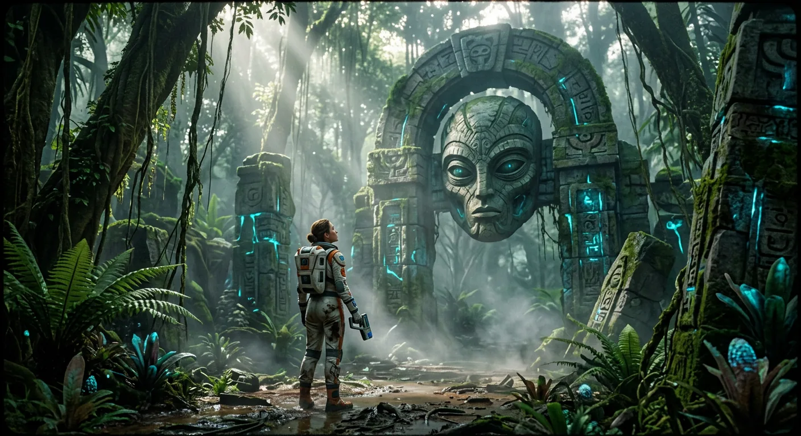
Night and Day Like a Black Wing
The Time Traveller resumed his account to his assembled guests, speaking now of concrete matters—of ivory bars cracked and brass rails bent, of a nickel bar that had proven exactly one inch too short and had cost him precious days in the remaking. These were the mundane delays that had kept him from his appointment with eternity, until at last, at ten o'clock that very morning, the machine stood complete.
He had settled himself into the saddle with the peculiar calm of a man who holds his fate in his own hands, comparing his sensation to that of a suicide pressing a pistol to his skull—that exquisite wondering at what shall come next. The levers responded to his touch, and in the space of what seemed a single heartbeat, nearly five hours had vanished from the clock face. The thing worked. The impossible had become merely improbable, and then inevitable.
With renewed determination, he threw himself forward through time. The laboratory dissolved into haziness; his housekeeper, Mrs. Watchett, shot across the room like a rocket on some errand she would never remember him witnessing. Night and day began their mad flapping dance, darkness falling like the turning out of a lamp, tomorrow arriving before he could properly bid farewell to today. The sensations proved excessively unpleasant—a helpless headlong motion, the perpetual anticipation of catastrophe, the switchback feeling of falling without end.
As his velocity increased, the world transformed into something altogether strange and beautiful. The sun became a streak of fire arcing across a sky of deepest twilight blue. The moon traced a fainter fluctuating band. Trees rose and fell like puffs of vapour, cycling through their seasons in moments. Great buildings emerged from nothing, stood briefly fair and faint, then passed away like dreams. Snow flashed white across the world and gave way to the bright brief green of spring, again and again, each cycle compressed into seconds.
A kind of hysterical exhilaration overtook him. Curiosity warred with dread as he contemplated what wonders—or horrors—might await him in this dim elusive future. The architecture grew more massive, more splendid, built of glimmer and mist. The hillside remained perpetually green, as if winter itself had been abolished.
But stopping presented its own terrible mathematics. At such velocity, he slipped like vapour through intervening matter. To halt meant to occupy the same space as whatever stood in his path—molecule against molecule, a chemical reaction that might well blast him into dimensions unknown. This risk, so cheerfully accepted in theory, now seemed rather less amusing in practice. His nerves, battered by the prolonged sensation of falling, finally betrayed him. With petulant impatience, he wrenched the lever.
The machine reeled. He was flung headlong through the air.
He came to rest on soft turf beneath a pitiless hail, the overturned machine beside him, surrounded by rhododendron bushes whose mauve and purple blossoms shattered under the bombardment. Through the grey downpour loomed a colossal white figure—a sphinx-like form with wings spread as if hovering, its sightless eyes and faint smile weathered by ages into something suggesting disease. The full temerity of his voyage struck him then: What might humanity have become? What cruelties might have flourished? What inhuman powers might look upon him as nothing more than a savage beast to be slain?
Panic seized him. He grappled desperately with the machine until it righted itself, ready for retreat. But as the storm cleared and the great buildings stood shining in the summer light, his courage returned. Figures in soft robes watched from high windows. Voices approached through the bushes.
And then one of them emerged—a slight creature, perhaps four feet tall, clad in a purple tunic, beautiful and graceful yet indescribably frail, with the hectic flush of a consumptive. At the sight of this delicate being, the Time Traveller's fear transformed into something else entirely, and he took his hands from the machine, prepared at last to meet the inheritors of the Earth.
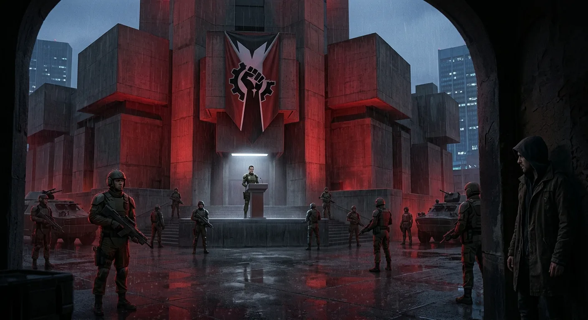
Fragile Inheritors of a Faded World
The Time Traveller found himself surrounded by creatures far stranger than any he had dared imagine. These fragile beings of the distant future approached him without fear, their delicate faces full of curiosity, their voices flowing in strange liquid syllables that seemed almost too sweet for human ears. When one reached out to touch his hand, and others pressed soft fingers against his shoulders and back, he understood they meant only to confirm his reality—this rough visitor from ages past.
Yet even as he marvelled at their graceful gentleness, their childlike ease, the Time Traveller felt a prickle of unease. Their little pink hands wandered toward the machine itself, and with sudden presence of mind he removed the control levers and thrust them into his pocket. The machine now sat useless to any but himself—a precaution that would prove wise indeed.
Examining these people more closely, he noted their peculiar beauty: uniformly curly hair ending sharply at the neck, faces entirely smooth, ears remarkably small, mouths delicate with thin red lips. Their eyes, large and mild, seemed strangely lacking in the keen intelligence he had expected. When he attempted to communicate through gesture—pointing to the sun, miming time itself—one pretty creature in chequered purple and white responded by imitating thunder. The implication struck him like a blow: did they think he had descended from the sun in a storm?
The realisation crashed upon him with bitter force. He had journeyed eight hundred thousand years expecting to find humanity ascended to unimaginable heights of knowledge and art. Instead, he found himself among beings with the intellectual capacity of five-year-old children. For one terrible moment, he felt the Time Machine had been built in vain.
But these gentle folk knew nothing of his disappointment. They draped him in chains of extraordinary flowers—blossoms of such delicate beauty as only countless centuries of cultivation could produce—until he stood nearly smothered in petals. With melodious laughter they led him past that enigmatic white sphinx, which seemed to smile at his bewilderment, toward a vast grey edifice of ancient stone.
The great hall into which they ushered him spoke of grandeur long faded. Stained-glass windows, broken in places, cast tempered light across a floor worn into channels by generations of passing feet. Marble tables stood fractured at the corners, curtains hung thick with dust. Yet the effect remained strangely rich, almost picturesque in its decay. Some two hundred of these small people reclined on cushions, eating fruit with bare hands and watching their curious guest with shining eyes.
Fruit alone sustained them—all manner of strange cultivated varieties, including one floury delicacy in a three-sided husk that would become the Time Traveller's staple. The horses, cattle, sheep, and dogs of his own age had long since followed the ancient reptiles into extinction. Here was a world transformed utterly, simplified somehow, reduced to these gentle vegetarians in their silken robes amid their crumbling magnificence.
Determined to understand, he began the laborious work of learning their speech. Holding up fruits, making interrogative sounds, he coaxed names from them amid much laughter at his clumsy attempts to form their delicate syllables. Yet even this small effort taxed their patience. These beautiful creatures tired quickly, their attention wandering, their interest fading. The Time Traveller found himself a schoolmaster among children who had no wish to learn—or to teach.
As the lesson dwindled and his new companions drifted away to their own pursuits, he began to sense that this Golden Age concealed mysteries far deeper than mere intellectual decline, secrets that would reveal themselves only with time and careful observation.
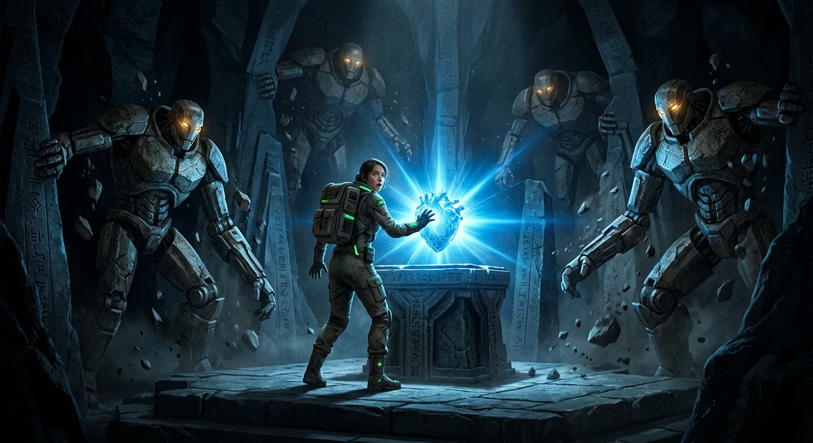
The Sunset of Mankind
The Time Traveller soon discovered a peculiar quality about his diminutive hosts—their utter want of sustained curiosity. Like children captivated by some novel plaything, they would crowd about him with eager cries of wonder, only to lose interest moments later and drift away toward fresher diversions. The dinner concluded and his first halting attempts at conversation exhausted, he found himself virtually abandoned, those who had gathered so enthusiastically now scattered to unknown pursuits. It struck him how swiftly he came to disregard these little people in turn, stepping out through the portal into the sunlit world the moment his hunger was satisfied.
The calm of evening lay upon the land as he emerged, the scene bathed in the warm amber glow of a dying sun. Everything stood utterly transformed from the world he had known—even the flowers wore unfamiliar aspects. The great hall occupied a slope overlooking a broad river valley, though the Thames itself had shifted perhaps a mile from its present course. He resolved to climb a distant crest for a wider prospect of this strange Earth in the year Eight Hundred and Two Thousand Seven Hundred and One—for such was the date his machine's dials recorded.
As he walked, he searched for any impression that might illuminate the condition of ruinous splendour surrounding him. Partway up the hill stood a vast heap of granite bound with aluminium—precipitous walls and crumbled masses overgrown with beautiful pagoda-like plants, nettles perhaps, though wonderfully tinted and incapable of stinging. Some derelict structure, its original purpose lost to time. Here, he would later experience something strange indeed—the first intimation of a far stranger discovery.
From a terrace where he paused to rest, a sudden realisation struck him: there were no small houses anywhere. The cottage and single-family dwelling, those characteristic features of English landscape, had vanished entirely. Only palace-like buildings rose among the greenery. "Communism," he murmured to himself.
Then came another thought, equally startling. Studying the half-dozen figures trailing behind him, he perceived what he had somehow failed to notice before—they were all identical in form. The same costume, the same soft hairless visage, the same girlish rotundity of limb. The sexes had merged into one. Even the children appeared merely as miniatures of adults, precocious in their physical development.
Considering the ease and security in which these people lived, such uniformity seemed logical enough. The differentiation between man and woman, the institution of family itself, were militant necessities of a harsher age. Where violence came rarely and offspring were secure, such specialisation became obsolete. Yet even as he formed this speculation, he sensed it would prove insufficient.
Reaching the summit at last, he settled upon a corroded seat of yellow metal, its armrests fashioned into griffins' heads, and surveyed the broad vista beneath the flaming western sky. The Thames wound below like burnished steel. Great palaces dotted the variegated greenery—some ruined, some occupied. No hedges marked proprietary boundaries. No agriculture scarred the land. The whole earth had become a garden.
Here, watching the ruddy sunset, he began constructing his interpretation of this future world. Humanity, he concluded, stood upon the wane. Strength springs from necessity; security breeds feebleness. The civilising process had reached its climax—disease conquered, nature subjugated, social struggle abolished. Yet with such triumph came inevitable adaptation. Without hardship, human intelligence and vigour had withered. The restless energy that once drove mankind to greatness had become purposeless, its final flourish visible in those exquisite but abandoned buildings.
Art and eroticism—the refuge of energy without outlet—had themselves faded to mere dancing and flower-gathering. The grindstone of pain and necessity lay broken at last.
Standing in the gathering darkness, he believed he had mastered the whole secret of these delicious people—a simple, plausible explanation. As most wrong theories are.
Yet somewhere below, in those mysterious wells beneath their cupolas, darker truths awaited discovery.
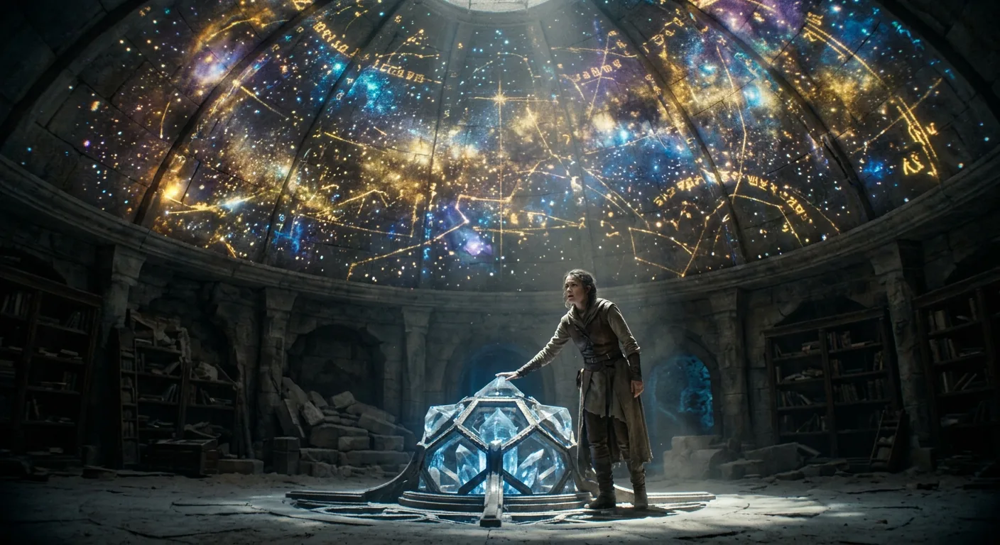
The Time Machine Vanishes
As the Time Traveller stood atop that distant hill, musing upon the strange perfection of this future age, the full moon rose gibbous and yellow out of a silver overflow of light in the northeast. The bright little figures far below ceased their movements, and a noiseless owl passed through the gathering darkness. He shivered against the chill and resolved to descend, to find some place of rest.
His eye sought the familiar building, then travelled along to the figure of the White Sphinx upon its bronze pedestal, growing ever more distinct as moonlight brightened the landscape. The silver birch stood against it still, the rhododendron bushes tangled black in the pale illumination, and there—there was the little lawn. Yet something was wrong. A queer doubt crept through him, chilling his complacency. He told himself stoutly that this was not the same lawn, but the white leprous face of the sphinx was turned toward it, and the terrible conviction settled upon him with crushing weight: the Time Machine was gone.
The possibility of losing his own age struck him like a lash across the face—the thought of being left helpless in this strange new world gripped his throat and stopped his breathing. In moments he was running with great leaping strides down the slope, falling headlong once and cutting his face, yet losing no time to stanch the blood. All the while he told himself they had merely moved it under the bushes, pushed it aside—yet with the certainty that sometimes accompanies excessive dread, he knew such assurance was folly.
When he reached the lawn, his worst fears stood confirmed. Not a trace of the machine remained. He ran furiously round the empty space among the black tangle of bushes, then stopped abruptly, hands clutching his hair, while above him the sphinx towered white and shining, seeming to smile in mockery of his dismay.
He could not console himself by imagining the little people had sheltered it, for he felt assured of their inadequacy. What dismayed him was the sense of some hitherto unsuspected power whose intervention had caused his invention to vanish. Yet he knew the machine could not have moved in time—the levers' attachment prevented tampering. It had moved only in space, but where?
A kind of frenzy seized him. He ran violently among the moonlit bushes, beat them with clenched fists until his knuckles bled, then went sobbing and raving to the great stone building. There he found the little people sleeping upon cushions, and he bawled at them like an angry child, shaking them roughly. Some laughed; most looked frightened. Realizing the folly of reviving their forgotten sensation of fear, he dashed away into the moonlight.
That long night of despair wore him down to nothing but misery. At last he collapsed near the sphinx, weeping with absolute wretchedness, and slept.
Morning brought clarity. In the plain reasonable daylight, he could face his circumstances squarely. Even supposing the worst—the machine destroyed—he must remain calm, learn the ways of these people, perhaps eventually build another. More likely, however, the machine had simply been taken away. He must find its hiding-place and recover it by force or cunning.
Examining the ground, he discovered a groove ripped in the turf and strange narrow footprints leading toward the sphinx's pedestal. Rapping upon the decorated bronze panels, he found it hollow—his machine was certainly inside. But the little people reacted with horror and repugnance whenever he gestured toward opening it, retreating as though grossly insulted.
He hammered at the bronze until he had flattened decorations and scattered verdigris in powdery flakes, but nothing came of it. Finally, exhausted and reasoning with himself, he resolved to leave the sphinx alone and learn this world's ways, watching for clues. The bitter humour of his situation struck him then—years spent in toil to reach the future age, and now his passion was entirely consumed with escaping it. He had devised the most complicated trap imaginable, and caught himself within it.
In the days that followed, he made what progress he could with the strangely simple language and pushed his explorations outward, yet a certain feeling tethered him always within a circle of a few miles round his arrival point—and round the sphinx that held his only hope of return.
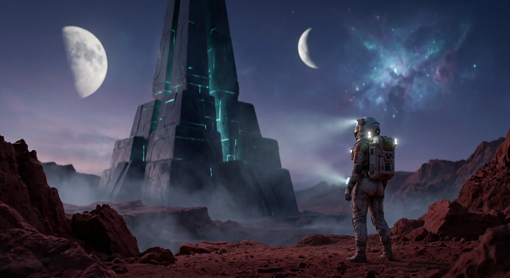
Mysterious Wells and Unanswered Questions
The Time Traveller's explorations of this distant age revealed a world of breathtaking abundance—splendid buildings in endless variety crowning every hill, silver waters glinting beneath clustered evergreens, and blossom-laden trees stretching toward blue undulating horizons. Yet amid this pastoral magnificence, certain curious features demanded his attention. Scattered across the landscape stood deep circular wells, bronze-rimmed and sheltered by little cupolas, their shafts plunging into impenetrable darkness. Peering into these mysterious apertures, he could detect no water, no reflection from his matches—only a rhythmic thud-thud-thud rising from below, like the beating of some vast engine, and a steady current of air rushing downward. Connecting these wells to the tall towers flickering with heat upon the slopes, he surmised an extensive system of subterranean ventilation, though its true purpose eluded him.
He confessed freely the limitations of his understanding. Like a Central African traveller returned to describe London's railways and telegraphs, he grasped only fragments of this future civilisation. The mysteries multiplied: no signs of cremation or burial, no aged or infirm among the gentle Eloi, no machinery to produce their pleasant fabrics and metalwork sandals. These creatures spent their days in idle play, bathing, eating fruit, sleeping—yet somehow their world continued functioning through some invisible automatic organisation.
The disappearance of his Time Machine into the pedestal of the White Sphinx haunted him, another piece of an inscription he could not fully read.
On his third day came an unexpected comfort. Watching the little people bathe, he observed one seized by cramp, drifting downstream while her companions made no attempt at rescue—a startling revelation of their strange deficiency. He plunged in himself, drawing the poor creature to safety. That afternoon, she found him again, presenting him with a garland of flowers, and thus began his queer friendship with Weena. She clung to him with childlike devotion, her distress at his departures almost frantic, yet somehow her affection transformed his returns to the White Sphinx into something resembling coming home.
From Weena he learned that fear had not vanished from the world. She dreaded darkness with singular passion—shadows, black things, the night itself. The Eloi gathered into their great houses after dark, sleeping in droves, terrified of the lightless hours. Yet like a blockhead, he missed the lesson of that fear.
One grey dawn, restless from troubled dreams, he glimpsed ghostly white figures moving upon the hillside—ape-like creatures carrying dark burdens, vanishing into bushes. He dismissed them as phantoms of the half-light, but they lingered in his mind until Weena's rescue drove them temporarily away.
Then came the revelation. Seeking shelter from the oppressive heat in a ruined gallery, he halted spellbound before a pair of luminous eyes watching from the darkness. A moment of primal terror—then a queer little ape-like figure, dull white with greyish-red eyes and flaxen hair, darted past him into shadow. He pursued it to one of the bronze-rimmed wells, watching it clamber down metal rungs into the depths like some human spider.
The truth dawned with terrible clarity: Man had not remained one species. Below ground dwelt another race entirely—bleached, nocturnal creatures with enormous eyes, adapted to darkness through countless generations. These were the Morlocks, and beneath the pastoral surface of the Eloi's world stretched their vast tunnelled domain.
His theory crystallised around the social divisions of his own age—the gradual widening gulf between Capitalist and Labourer, the increasing tendency to push industry underground, the exclusive habits of the wealthy sealing off the surface world. In the end, above ground remained the Haves, pursuing pleasure and beauty; below ground, the Have-nots, adapted to perpetual darkness. Yet this balanced civilisation had clearly passed its zenith. The Eloi had degenerated into beautiful weakness, and what the Morlocks had become, he did not yet fully suspect.
Troublesome doubts remained. Why had the Morlocks taken his Time Machine? Why were the Eloi, supposedly masters, so helpless before the dark? When he pressed Weena about the Underworld, she shivered and burst into tears—the only tears he would witness in that Golden Age—and he ceased his questioning, content to banish her distress with the simple wonder of a burning match.
Yet those unanswered questions would soon demand their reckoning.
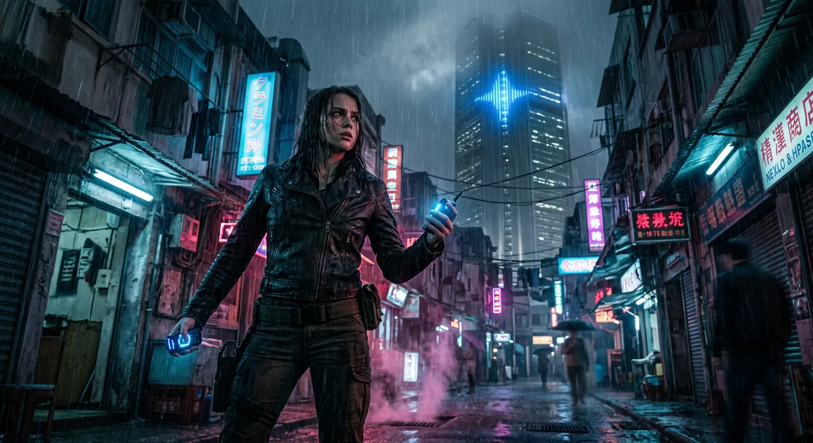
Descent Into the Underworld's Darkness
For two days the Time Traveller found himself paralysed by a most peculiar revulsion, unable to pursue the obvious course of action that lay before him. Those pallid Morlocks, with their worm-like pallor—the colour of specimens preserved in spirit jars at some zoological museum—filled him with an instinctive horror that seemed to seep into his very bones. Their flesh was filthily cold, and he began to understand why the Eloi shuddered at their existence.
Sleep eluded him. Perplexity and nameless dread pressed upon his mind, and he found himself creeping into the great hall where the little people slumbered in the moonlight, seeking comfort in their presence. Weena lay among them, and her nearness brought him some measure of reassurance. Yet even as he watched them sleep, a darker thought intruded—the moon would soon wane, and in the coming blackness these whitened Lemurs, this new vermin of the earth, would surely multiply their appearances above ground. He knew with terrible certainty that his Time Machine lay somewhere in those subterranean depths, and that only by descending into mystery could he hope to reclaim it. But the prospect of that solitary descent into the well's black throat filled him with dread. He had never felt quite safe at his back.
His restlessness drove him to wander ever farther afield, and it was on one such expedition that he spied a remarkable structure in the distance—a vast edifice of pale bluish-green, its façade possessing the lustrous quality of Chinese porcelain. He named it in his mind the Palace of Green Porcelain and resolved to explore it, though he recognised this curiosity for what it truly was: another day's postponement of the inevitable.
At last he could delay no longer. Setting out in the early morning toward a well near ruins of granite and aluminium, he found little Weena dancing beside him. But when she saw him lean over the well's mouth, her demeanour transformed utterly. He kissed her farewell and began his descent, even as she gave a most piteous cry and pulled at him with desperate hands. Her opposition only strengthened his resolve. He shook her off—perhaps too roughly—and lowered himself into the shaft's dark throat, catching one final glimpse of her agonised face peering down at him.
The descent proved treacherous beyond imagining. The metallic bars were fashioned for creatures far smaller and lighter, and his muscles screamed with the strain. One bar bent suddenly beneath his weight, nearly casting him into the abyss. Glancing upward, he saw the opening reduced to a small blue disc against which Weena's head appeared as a round black projection—and then she vanished from view.
At last he reached a horizontal tunnel where he might rest his trembling limbs. He lay in absolute darkness, the throb of machinery filling the air, until soft hands touched his face. Striking a match, he beheld three stooping white creatures retreating from the light, their enormous eyes reflecting the flame like those of abysmal fishes. They could see him perfectly well in that rayless obscurity, yet the light sent them scurrying into dark gutters and tunnels.
Pressing forward, he emerged into a vast arched cavern where great machines cast grotesque shadows and the faint halitus of freshly-shed blood hung in the air. Upon a white metal table lay what appeared to be a meal—a red joint of meat that confirmed his darkest suspicions about the Morlocks' carnivorous nature. Then his match burnt down, and hands began touching him, plucking at his clothing, attempting to steal his remaining matches. Their queer laughing noises and whispering sounds in the darkness were indescribably horrible.
He fled, lighting his precious few remaining matches to hold back the rustling, pattering creatures that pursued him like wind through leaves. They grasped at his feet as he reached the shaft, but kicking violently, he broke free and began his desperate climb toward the light. The ascent seemed interminable, nausea threatening to loose his grip, but at last he hauled himself over the well-mouth and staggered into the blinding sunlight, falling upon his face. The soil smelled sweet and clean. Weena kissed his hands and ears, the voices of the Eloi surrounded him, and then consciousness slipped away.
Yet even as he lay insensible in the warm sunshine, the mysteries of the Underworld remained unsolved, and somewhere in those depths, his Time Machine still waited.
Fear Returns With the Waning Moon
The Time Traveller's account grew darker now, heavier with dread. Where once he had felt merely impeded by circumstance—trapped in a pit, perhaps, but certain of eventual escape—a new and sickening understanding had settled upon him. The Morlocks were not simply an obstacle to be overcome through cleverness or patience. There was something altogether inhuman about them, something malign that stirred an instinctive loathing in his very bones. He no longer felt like a man who had stumbled into difficulty. He felt like prey.
It was Weena who first planted the seed of his mounting terror, through scattered remarks about the Dark Nights that he had initially dismissed as incomprehensible. But comprehension came swiftly enough. The moon was waning, and with each passing evening the intervals of darkness stretched longer, deeper. The fear that gripped the Eloi after sunset was no mere superstition—it was survival instinct, however feeble and ineffectual. The Time Traveller now grasped what the coming moonless nights would bring, and the knowledge chilled him.
His earlier theory lay in ruins. He had supposed the Eloi to be the descended aristocracy, the Morlocks their mechanical servants toiling below. But the old order had inverted itself across countless generations. The Morlocks still clothed and tended the Eloi, yes—but as a horse paws the ground from ancient habit, or as men hunt for sport what they no longer need. The beautiful Upperworld people had decayed into mere futility, possessing the sunlit earth only on sufferance. And now their Nemesis crept ever closer. The brother whom man had long ago thrust into darkness was returning, changed beyond recognition. Then, unbidden, a memory surfaced: the meat he had glimpsed in the Underworld. Its form nagged at him, familiar yet unplaceable, and he thrust the thought aside.
But the Time Traveller was no Eloi. He came from an age when fear did not paralyse, when mystery yielded to reason. He would defend himself. He resolved at once to fashion weapons and find a fortress where he might sleep secure, for the thought of lying exposed to those pale creatures each night filled him with shuddering horror.
That afternoon he wandered the Thames valley seeking refuge, but found nothing the climbing Morlocks could not reach. Then the Palace of Green Porcelain rose in his memory—its tall pinnacles, its gleaming walls—and he set out toward the southwest with Weena upon his shoulder. The journey proved far longer than he had reckoned, his shoes wearing painfully against his feet, and sunset had long passed before the palace appeared silhouetted against a pale yellow sky.
Weena delighted in being carried, then ran alongside him, filling his pockets with flowers she had gathered. The Time Traveller paused here in his telling, withdrew two withered blooms—white, large, like mallows—and placed them silently upon the table before continuing.
As evening settled and they crested the hill toward Wimbledon, an expectant stillness hung over the world. In that calm his senses sharpened until he fancied he could feel the hollow earth beneath his feet, could almost perceive the Morlocks stirring in their subterranean passages, waiting for darkness. Night deepened. Stars emerged in unfamiliar constellations, rearranged by millennia of slow celestial drift, though the Milky Way remained its ancient tattered self. Gazing upward, his troubles briefly dwarfed by that unfathomable distance, he contemplated the vast precessional cycles through which all human civilisation had been swept into oblivion—leaving only these frail Eloi and the white Things he dreaded.
Then, with sudden clarity, he understood what the meat had been. He looked at Weena sleeping starlike beside him and forced the thought away.
Dawn came without incident, and in morning's renewed confidence his fears seemed almost unreasonable. But as they descended into the wood, now pleasant with green light, and he watched the Eloi laughing in the sunshine as though night were nothing, the horror returned. The Morlocks were farming them. The Time Traveller's plans crystallised: secure refuge, fashion weapons, obtain fire, and somehow breach the bronze doors beneath the White Sphinx to reclaim his machine. Weena he would bring with him, back to his own time.
With these desperate schemes turning in his mind, they pressed on toward the Palace of Green Porcelain.
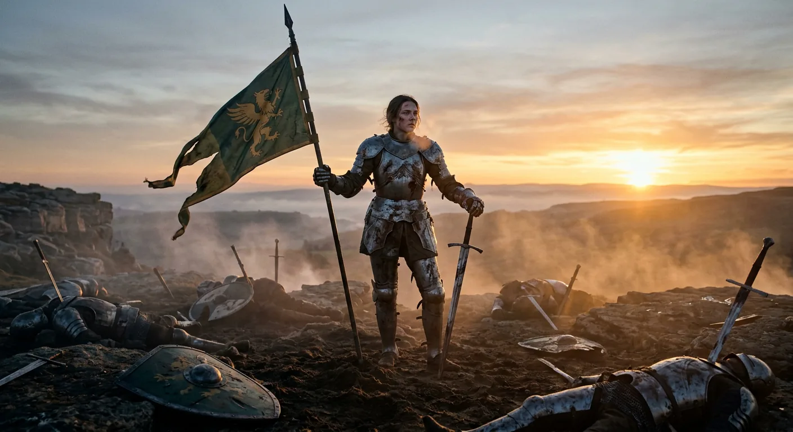
Ruins of a Forgotten Museum
The traveller and Weena approached the Palace of Green Porcelain around midday, finding it deserted and surrendering to slow ruin. Great sheets of its green facing had peeled away from corroded metal bones, and only ragged fragments of glass clung to the window frames. The structure commanded a high, grassy down, and before entering, he gazed north-eastward with some surprise at a vast estuary stretching where Wandsworth and Battersea had once stood—a fleeting thought crossing his mind about what strange transformations might have befallen the creatures of the sea, though he did not pursue it.
The palace proved upon closer inspection to be constructed of genuine porcelain, its face bearing an inscription in characters utterly foreign to him. He entertained the foolish notion that Weena might interpret the writing, only to discover that the very concept of written language had never once entered her small, childlike mind. She seemed so human in her affection that he often forgot how far removed she truly was.
Through broken doors they entered not a customary hall but a long gallery illuminated by side windows, and the traveller recognised it immediately for what it was: a museum. Dust lay thick upon the tiled floor, shrouding a remarkable collection of objects in grey silence. The skeletal remains of a Megatherium stood gaunt in the centre, its skull toppled beside it, and further along loomed the massive barrel-ribs of a Brontosaurus. Here was the ruined splendour of some latter-day South Kensington, a cathedral to knowledge now crumbling despite the near-extinction of decay's agents. The Eloi had threaded fossils upon reeds like primitive ornaments, and the Morlocks had bodily removed certain cases—evidence of the twin degradations besetting this monument to intellect.
The traveller's excitement grew as he considered what other galleries might lie within—perhaps historical collections, perhaps even a library. In a mineralogy section he discovered a block of sulphur that set his mind racing toward gunpowder, though he found no saltpetre to complete the formula. The natural history wing offered only desiccated mummies and brown botanical dust. Then came a colossal gallery of machines, corroded yet fascinating, their purposes tantalisingly obscure—until Weena clutched his arm in sudden fear.
The floor sloped downward into thickening darkness, and in the dust he discerned narrow footprints. The pattering sounds from below confirmed his dread: Morlocks. Acting swiftly, he wrenched a lever from one of the machines, fashioning himself a serviceable mace. The urge to descend and slaughter those pallid creatures burned fiercely within him, restrained only by concern for Weena and his Time Machine.
They passed through a vast library where books had crumbled to brown rags, then climbed to a chemistry gallery where fortune smiled upon him at last. In an air-tight case he found a box of matches—perfectly preserved, perfectly functional. He celebrated with an absurd composite dance while Weena clapped in delight. Better still, he discovered a sealed jar of camphor, that volatile substance which by miraculous chance had survived millennia and would burn with a steady flame.
Though he found no explosives capable of breaching the bronze doors, and though dynamite cartridges proved to be disappointing dummies, the traveller rested in a small courtyard at sunset feeling genuinely prepared. Fire was now his ally against the night-dwelling Morlocks, and with his iron mace and growing confidence, the bronze doors no longer seemed so formidable an obstacle.
Morning would bring the true test—the recovery of his Time Machine and whatever confrontation that effort demanded.
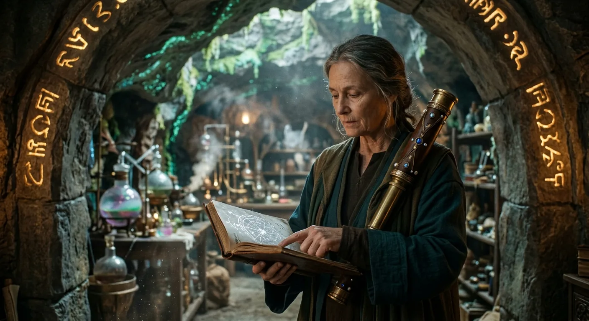
Fire and Flight Through the Forest
The Time Traveller and Weena departed the Palace of Green Porcelain with the sun still lingering above the horizon, his mind fixed upon reaching the White Sphinx by the following morning. The woods that had turned him back before now lay directly in his path, and he resolved to press through them that very night, gathering sticks and dried grass as they walked, intending to build a fire whose protective glare would guard their sleep. But the burden of kindling slowed their progress considerably, and Weena grew tired, and exhaustion pulled at him too—for he had gone without sleep for a night and two days, his mind growing feverish and irritable with the weight of it all.
By the time full darkness descended, they had only just reached the wood's edge. Weena would have stopped there, fearful of the blackness ahead, but the Traveller sensed some terrible thing approaching and pressed onward. Behind them, crouching among the dim bushes, he glimpsed three figures. The forest stretched perhaps a mile across, and beyond it lay bare hillside—safer ground, he reasoned. But to light matches as he walked meant abandoning his firewood, and so, with reluctant ingenuity, he set the pile ablaze to frighten their pursuers. He would later recognise this as atrocious folly.
Weena, who had never witnessed flame in her decadent age where fire-making had been forgotten, wanted desperately to touch the dancing red tongues. The Traveller restrained her and plunged into the darkness, carrying her upon his arm with the iron bar clutched in his free hand. The fire's glow faded behind them as they moved deeper into the trees, and soon he heard it—the pattering of feet, the strange cooing voices of the Underworld. The Morlocks were closing in.
When soft hands began creeping over his coat and touching his neck, he struck a match. White backs fled through the trees. But in the chaos of lighting camphor and checking on Weena—who lay motionless at his feet, scarcely breathing—he lost all sense of direction. Desperation forced him to build another fire where they stood, though the Morlocks' eyes gleamed like carbuncles in the surrounding dark. The smoke grew heavy, the camphor vapours thick, and despite his efforts to stay vigilant, sleep overtook him.
He woke to horror—hands upon him, his matchbox stolen, his fire dead. The creatures heaped upon him like some monstrous web of soft flesh. Little teeth nipped at his neck. But his hand found the iron lever, and with savage strength he fought free, swinging and thrusting, feeling bone give way beneath his blows. A strange exultation seized him even as he accepted that both he and Weena were surely lost.
Then came an unexpected reprieve. The darkness grew luminous with spreading red light, and the Morlocks fled in streams—for the fire he had carelessly set hours before now roared through the forest behind him. He emerged onto a small hillock where thirty or forty Morlocks stumbled about, blinded and helpless in the glare. He struck at them in terror until he understood their misery, then stayed his hand.
Through that long night he searched for Weena, but she was gone—her body lost somewhere in the burning wood. When dawn finally came, grey and smoke-choked, he felt the loss like an overwhelming calamity, a loneliness more terrible than any he had known. Limping across the smouldering ashes toward the hiding place of his machine, he discovered in his pocket a few loose matches that had escaped before the box was lost—small comfort against the grief that pressed upon his heart as he made his solitary way toward the White Sphinx.
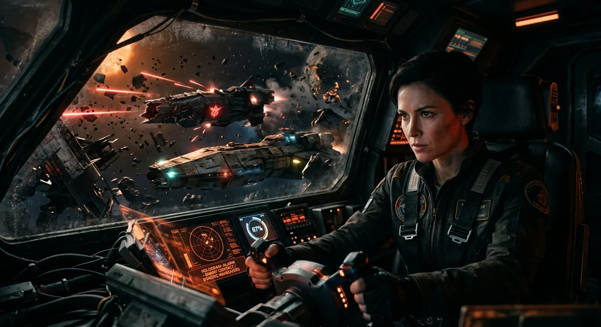
The Trap Sprung, The Escape Made
Returning to the yellow metal seat where he had first surveyed this distant world, the Time Traveller found himself confronting the bitter irony of his earlier confidence. The landscape remained unchanged in its terrible beauty—the same lush foliage, the same crumbling palaces, the same silver river winding through fertile banks. The Eloi drifted among the trees in their bright garments, some bathing in the very spot where he had rescued Weena, and this sight pierced him with sudden grief. Yet now he understood what lurked beneath the pastoral surface, those cupolas dotting the landscape like dark stains, marking the passages to the Underworld. The beauty of the Eloi concealed their fate; they lived as pleasantly as cattle grazing in a field, and like cattle, they would meet the same end.
Sitting in the warm sunlight, he mourned the suicide of human intellect. Mankind had pursued comfort and security with such relentless determination that it had finally achieved its paradise—and destroyed itself in the process. In that perfect world of eight hundred thousand years hence, all problems had been solved, all dangers eliminated. The wealthy had been assured their comforts, the labourers their purpose, and a great stillness had descended upon the earth. But nature, he reflected, grants intelligence only where change and danger demand it. An animal perfectly adapted to its environment becomes merely a perfect mechanism, requiring no thought, no adaptation, no growth. The Eloi had drifted toward their feeble prettiness while the Morlocks descended into mechanical industry below. When the systems that fed the Underworld eventually failed, Mother Necessity returned with terrible demands, and the Morlocks, retaining some vestige of initiative through their work with machinery, turned to forbidden meat.
Exhausted by the terrors of recent days and heavy with grief, he allowed himself to sleep upon the turf, waking refreshed as the sun began its descent. Armed with his crowbar and matches, he approached the White Sphinx—only to discover its bronze panels standing open, revealing a small chamber within. There sat the Time Machine, carefully oiled and cleaned, clearly examined by curious Morlock hands.
He understood their trap instantly, and suppressing laughter at their primitive cunning, he stepped inside and approached his machine. The bronze panels crashed shut behind him, plunging him into darkness. The Morlocks thought him caught, but he chuckled at their error—he needed only to attach the levers he carried and vanish like a ghost.
Then came the dreadful realization: his matches would strike only against their box, useless in the dark. His calm shattered as murmuring laughter surrounded him. Pale hands grasped at him, and he fought desperately, swinging the levers as weapons while scrambling onto the machine's saddle. Fingers clawed for the levers even as he struggled to find the studs where they fitted. One lever nearly slipped away entirely, and he had to butt his head forward in the blackness, feeling a Morlock skull ring against his own, to recover it.
It was closer than even the forest battle, this final scramble in the dark. But at last the lever locked into place, and he pulled it over. The grasping hands fell away, the darkness lifted from his eyes, and once again that familiar grey tumult of temporal passage surrounded him—carrying him away from that doomed world and its terrible secrets, though not from the weight of all he had witnessed and lost.
Earth's Final Twilight
The Time Traveller recounted how he had fled in desperate haste, seated improperly on his machine, clinging sideways to the saddle as it swayed and vibrated through the temporal currents. When at last he gathered himself to examine the dials, he discovered with astonishment that he had pulled the levers forward rather than reversing them—the thousands hand spinning like a watch's second hand, carrying him not homeward but ever deeper into futurity.
As he hurtled onward, the world transformed in ways both strange and terrible. The familiar grey pulsation of passing days grew darker, and the blinking alternation of light and dark stretched longer and longer until the days themselves seemed to span centuries. A perpetual twilight settled over the earth, broken only by the occasional flare of a comet streaking across the darkening heavens. The sun ceased its ancient journey across the sky; instead it hung motionless on the western horizon, swollen to a vast red dome that glowed with sullen heat and sometimes flickered toward extinction. The moon had vanished entirely, the stars crept rather than wheeled, and the Traveller understood that the tidal forces had at last completed their patient work—the earth had surrendered its rotation, turning one face forever toward its dying star, just as the moon had long ago yielded to the earth.
He slowed cautiously, mindful of his previous headlong tumble, and brought the machine to rest upon a desolate beach. The sky above him was no longer blue but split between ink-black darkness studded with pale stars to the northeast and a deep Indian red overhead, brightening to glowing scarlet where the massive hull of the sun lay beached upon the horizon. Harsh reddish rocks surrounded him, their southeastern faces carpeted with intensely green vegetation—lichens and liverworts thriving in this perpetual twilight. The sea stretched away without wave or breaker, breathing only with a slight oily swell, its margins crusted thick with pink salt. The thin air burned his lungs, reminding him of mountain altitudes.
A harsh scream drew his attention to something like a great white butterfly fluttering up the slope and disappearing beyond the hillocks. Then he noticed what he had taken for reddish rock was moving—a monstrous crab-like creature, large as a table, its claws swaying, its whip-like antennae probing the air, its stalked eyes gleaming with alien hunger. Before he could react, he felt a tickling at his cheek and turned to find another of the horrid things directly behind him, its antenna in his grasp, its slime-smeared claws descending. He threw himself at the lever and leapt a month forward, but the beach remained crawling with dozens of the creatures, creeping among sheets of poisonous green.
Driven by fascination with the earth's ultimate fate, he travelled in great strides of a thousand years and more, watching the sun swell larger and redder, the sea grow ever more still and dead. Thirty million years hence, the crabs had vanished, and bitter cold had claimed the world. White flakes drifted down, snow lay pink beneath the starlight, and ice fringed the bloody sea. Life persisted only in green slime upon the rocks. Then the sun's edge darkened—an eclipse, perhaps Mercury or the moon passing before that dying ember. Darkness swept toward him, cold cut to his marrow, and the silence of utter extinction pressed upon him. When the sun's edge reappeared like a red-hot bow, he stumbled from the machine, sick and faint, and glimpsed upon a distant shoal a round black thing trailing tentacles, hopping fitfully against the blood-red water.
Terror of that awful twilight sustained him just long enough to clamber back into the saddle, knowing he must somehow find the strength for the journey home.
Rewinding Through Time to Home
So the Time Traveller came back.
For how long he lay insensible upon that mechanical saddle, slumped across the brass rails and ivory levers, he could not say. But gradually the world reasserted itself around him—the blinking succession of days and nights resumed their familiar rhythm, the sun warming from that dying ember glow back to proper gold, the sky reclaiming its honest blue. He breathed easier then, the air no longer carrying that strange thinness of the distant future. The landscape shifted and flowed beneath him as millennia unwound, the hands upon his dials spinning backward through the ages, rewinding time itself like thread upon a spool.
At last came the dim shapes of houses, those first melancholy evidences of humanity in its long decline. These too flickered and changed, replaced by others and others still, civilisations rising and falling in reverse as he hurtled homeward through the centuries. When the million dial crept toward zero, he slackened his speed, watching with growing recognition as the architecture transformed into something familiar—the pretty, sensible buildings of his own era. The thousand dial wound back to its starting point, and the strobing of night and day grew slower, gentler, until finally the old walls of his laboratory materialised around him like a half-remembered dream.
One curious detail struck him as he decelerated through those final moments. Mrs. Watchett, his housekeeper—he had observed her crossing the laboratory when first he departed, moving rocket-quick as his machine gathered velocity. Now, returning through that same instant, he witnessed her traversal again, but inverted entirely. The lower door swung open and she glided backward up the room, retreating in perfect reverse until she vanished through the upper door by which she had originally entered. Hillyer appeared as well, though only for the briefest flash before the present moment settled into place.
The machine stopped. The laboratory stood exactly as he had left it—his tools arranged just so, his apparatus waiting with mechanical patience. He dismounted shakily, his limbs trembling with exhaustion, and collapsed upon his workbench. For several minutes he could do nothing but shiver as the enormity of his journey pressed down upon him. Had it been real? Had he truly walked among the Eloi and fled from the Morlocks, or had he merely slept and dreamed the whole fantastic episode?
But no—the machine itself gave testimony. He had departed from the south-east corner and now rested against the north-west wall, having travelled the precise distance from his lawn to that pedestal beneath the White Sphinx where the Morlocks had imprisoned it. His body, too, bore witness: his heel still throbbed where he had injured it, his skin remained grimy with the dust of centuries.
Eventually he stirred himself, limping through the passage on his wounded foot, feeling wretched and thoroughly begrimed. The *Pall Mall Gazette* lay upon the hall table, confirming the date as today, the clock showing nearly eight. He heard voices from the dining room, the comfortable clatter of plates, and hesitated—so weak, so thoroughly undone. But then came the wholesome smell of meat, and hunger overcame all else. He opened the door upon his waiting guests, washed, dined, and now sat telling them everything.
Yet even as his tale drew to its close, questions lingered in the lamplight—questions his listeners would soon voice, doubts they could not help but harbour about a story so utterly beyond belief.
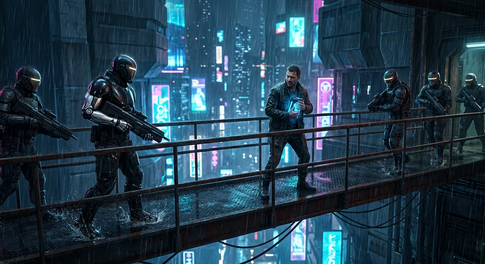
Doubt, Evidence, and Departure
The tale concluded, silence settled upon the familiar room like dust upon forgotten things. The Time Traveller, pipe in hand, regarded his assembled guests with that peculiar mixture of weariness and defiance that marks a man who has seen too much and can prove too little. He offered them an escape—call it speculation, call it fiction, dismiss the whole affair as a dream hatched in the workshop. Yet even as he spoke these concessions, his eyes drifted to the withered white flowers upon the table, and to the half-healed scars across his knuckles.
The Editor rose with a sigh and pronounced it a pity their host was not a writer of stories, that gentle condemnation which passes for polite disbelief. The Medical Man, ever the empiricist, busied himself examining the strange blossoms, confessing he could not place them within any natural order known to science. When he asked to keep them, the Time Traveller refused with sudden vehemence—they were Weena's gift, pressed into his pocket when he had travelled into Time, and he would not surrender them to skepticism.
Yet doubt crept even into the Traveller's own mind. The atmosphere of every day, the friendly faces, the comfortable room—all conspired against memory. Had he truly built the machine, or merely dreamed it? In a moment of desperate need for confirmation, he seized the lamp and led his guests through the corridor to the laboratory. There it stood: squat, ugly, and undeniably real—brass and ebony and ivory stained with brown spots, bits of grass clinging to its lower parts, one rail bent awry from that final desperate escape. The Traveller ran his hand along the damaged metal and pronounced his story true.
The guests departed into the night, the Editor dismissing everything as a gaudy lie. But one among them—the narrator himself—could not so easily shake free. The tale was fantastic, yet the telling had been sober and credible. He lay awake through the small hours, and by morning had resolved to return.
He found the laboratory empty save for the machine itself, which swayed at his touch with a strange instability, as though it existed only partially in the present moment. The Time Traveller appeared shortly after, a camera under one arm and a knapsack under the other, preparing for another journey. He promised proof—specimens, photographs, evidence enough to satisfy any doubter—if only his friend would wait until lunch. Half an hour, he said, no more.
The narrator consented and settled into a chair with a daily paper. But time, that treacherous commodity, slipped past, and suddenly he remembered an appointment with Richardson the publisher. He went to the laboratory to make his excuses.
What met him there was absence made visible. A truncated cry, a click, a thud, a gust of wind, and broken glass falling. For one impossible instant he glimpsed a ghostly figure seated within a whirling mass of black and brass—transparent as thought itself—before it vanished utterly. The machine was gone. The skylight pane had blown inward. The Time Traveller had departed once more into the stream of ages.
That was three years past. He has never returned.
Where did he go—backward to the blood-drinking savages of unpolished stone, or forward to some age where mankind's wearisome problems have found their solutions? The narrator cannot say. He knows only that the future remains black and blank, illuminated solely by the memory of one strange story. And he keeps, for whatever comfort they may offer, two white flowers—shrivelled now, brown and brittle—testament that even when mind and strength had failed, gratitude and tenderness endured in the human heart.
What remains, then, is to consider what meaning such a journey holds for those of us who must continue living in the present, as though the future were not already written in extinction and silence.
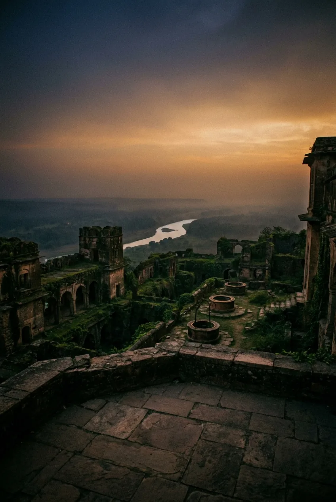